Modena 1852 issue 'POSTE ESTENSI' and Modena 1859 issues 'PROVINCIE MODONESI' or 'TASSA GAZETTE''
Italia - Italie - Italien
Return To Catalogue - King Victor Emanuel II - Issues of 1862-1899 - Issues of 1900-1929 - King Victor Emanuel III - Imperial issue of 1929 - Italy 1930-1944 - Italy socialist republic
Modena - Naples - Neapolitan Provinces - Papal States, (Roman States) 1851 issue - Papal States, 1851 issue 50 b and 1 Sc values - Papal States, 1867 issue - Parma 1852 issue - Parma 1857 issue - Parma 1859 issue - Romagna - Sardinia - Sicily - Tuscany part 1 - Tuscany part 2 - Austrian Italy
Airmail - Official stamps - Postage due stamps - Fiscal stamps, part 1 - Fiscal stamps, part 2 - Fiscal stamps, part 3 - Municipal stamps, part 1 - Municipal stamps, part 2 - Municipal stamps, part 3, stamps that were actually used - Parcel stamps - Local issues - Miscellaneous - Italian occupation of Austria - Italian occupation of the Aegean Islands - Italian post offices in China - Italian post offices Abroad (Turkey, Albania etc.) - 'ESTERO' on Italy (foreign offices, general issues) - 'La Canea' on Italy (Crete)
San Marino - Vatican - Fiume - Campione (Italian exclave in Switzerland)
Note: on my website many of the
pictures can not be seen! They are of course present in the
catalogue;
contact me if you want to purchase the catalogue.
The earliest Italian stamps did often only have the value written on it, the following table gives the meaning of the value inscription:
| 1/2 = Mezzo | 1 = Un | 2 = Due | 5 = Cinque |
| 10 = Dieci | 15 = Quindici | 20 = Venti | 25 = Venticinque |
| 30 = Trenta | 40 = Quaranta | 50 = Cinquanta | 60 = Sessanta |
Modena 1852 issue 'POSTE ESTENSI' and Modena 1859 issues 'PROVINCIE MODONESI' or
'TASSA GAZETTE''
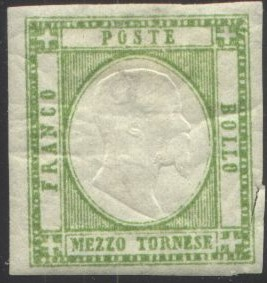
Naples (1858 issue or 1860 issue) and Neapolitan
Provinces
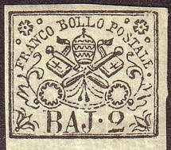


Parma 1852 issue ("STATI
PARM") - 1857 issue ("DUC. DI
PARMA") - 1859 issue ("STATI
PARMENSI")


Romagna ("FRANCO BOLLO
POSTALE") - Sardinia (part 1), part 2
("FRANCO BOLLO") - Sicily
("BOLLO DELLA POSTA DI SICILIA")


Tuscany part 1 - Tuscany part 2 ("FRANCOBOLLO
TOSCANO")
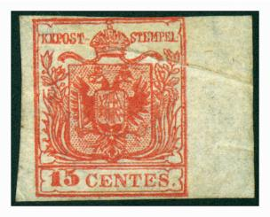

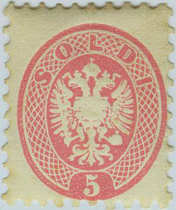
For stamps in the following or similar design with King Victor Emanuel II, click here.
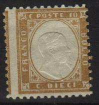
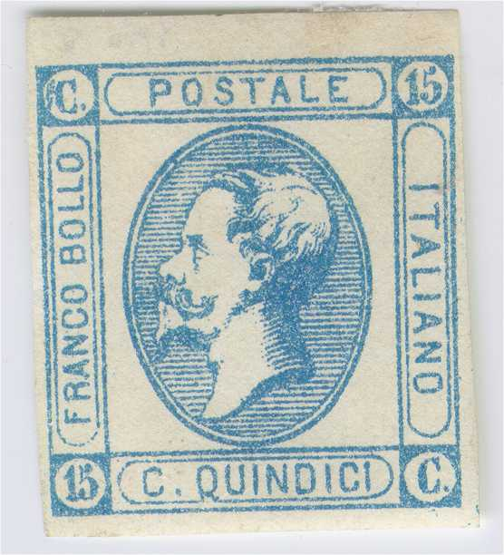
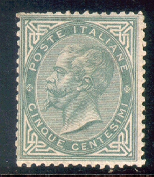
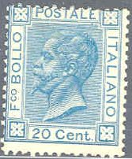
For stamps of Italy issued from 1862 to 1899, click here. Examples of this period:


Examples of stamps issued from 1900 to 1920:
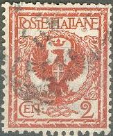
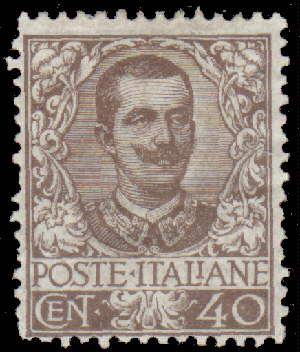 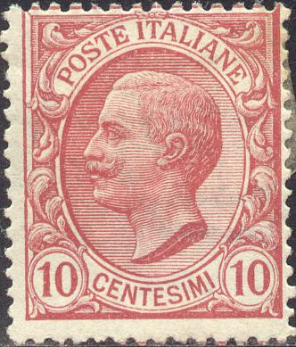
With image of King Victor Emanuel III
This republic was founded by Italian fascists after the retreat of the Germans in the Northern part of Italy. Stamps of Italy were overprinted "G.N.R." or "REPUBLICA SOCIALE ITALIANA" and/or an axe.
Other examples of this period:

Just after the end of World War II, due to the chaotic situation, letters are known to have been posted with fiscal stamps, postage due stamps etc. instead of normal postage stamps.

10 c brown (hammer breaking chain) 20 c brown (family with justice scale in background) 25 c blue (hand holding torch of freedom) 40 c black (hand planting tree) 50 c violet (design as 10 c) 60 c green (man pruning tree) 80 c red (design as 10 c) 1 L green (design as 40 c) 1.20 L brown (design as 25 c) 2 L brown (design as 60 c) 3 L red (design as 25 c) 4 L orange (design as 25 c) 5 L blue (design as 20 c) 6 L violet (design as 40 c) 8 L green (design as 10 c) 10 L red (design as 20 c) 10 L black (design as 10 c) 15 L blue (design as 40 c) 20 L violet (design as 25 c) 25 L green (broken tree with goddess of Italia in background, larger size) 25 L blue (design as 25 c) 30 L blue (design as 25 c) 50 L brown (design as 25 L) 100 L red (family design, but larger size)
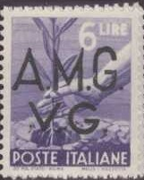
Stamps in the above designs, exist with overprint 'A.M.G. V.G.' and were issued by the Allied Military Government of the United States and Great Britain for use in Venezia Giulia (1945). The overprint exists on the values 25 c green (hand holding torch), 2 L brown, 3 L red, 4 L orange, 6 L violet, 20 L violet, 25 L green, 50 L brown and 100 L red (on this stamp the overprint is larger).
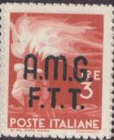
The overprints "A.M.G. F.T.T." were used in Trieste.
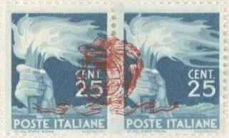
Private airmail overprint on
the white center between two stamps.

I've been told that this is a postal forgery of the 10 L value, I
have no further information.

5 L red (foot with wings) 10 L blue (man with horse) 15 L red (design as 10 L) 25 L orange (design as 5 L) 30 L violet (design as 5 L) 50 L lilac (design as 5 L) 60 L red (design as 10 L) 75 L lilac (horses with wings)
The 10 L and 30 L stamps exist with overprint 'A.M.G. V.G.' (Venezia Guilia). Other values exist with "A.M.G. F.T.T." or "AMG-FTT" to be used in Trieste.
"AMG-FTT" overprints used in Trieste
50 c blue ('LA FUCINA VALLE D'AOSTA')
1 L blue ('L'OFFICINA PIEMONTE')
2 L black ('IL CANTIERI LOMBARDIA')
5 L grey ('IL TORNIO TOSCANA')
6 L brown ('IL TOMBOLO ABRUZZI EMOLISE')
10 L green ('IL TELAIO CALABRIA')
12 L blue ('IL TIMONE VENETO')
15 L blue ('LO SCALO LIGURIA')
20 L violet ('LA SCIABICA CAMPANIA')
25 L light brown ('LE ARANCE SICILIA')
30 L lilac ('LA VENDEMMIA PUGLIA')
35 L red ('LE OLIVE BASILSCATA')
40 L brown ('IL CARRIO A VINO LAZIO')
50 L violet ('LE GREGGI SARDEGNA')
55 L blue ('L'ARATRO UMBRIA')
60 L red ('IL RACOLTO MARCHE')
65 L green ('LA CANAPA EMILIA ROMAGNA')
100 L brown ('IL GRANOTURCO TRIULI VENEZIA GUILIA')
200 L olive ('IL LEGNAME TRENTINO ALTO AORTE')
All these stamps exist with overprint 'AMG-FTT', issued for Trieste.
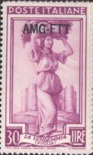
(Stamp issued in the 1950's, 'Siracusana', reduced size)
On coloured background 1 L grey 5 L grey 10 L red 12 L green 13 L lilac 15 L violet 20 L brown 25 L violet 30 L light brown 35 L red 50 L olive 60 L blue 70 L green 80 L light brown 90 L brown ...... Larger size 100 L brown 200 L blue On white background (small sized stamps) 100 L brown 150 L violet ......
So-called 'Falsi di Roma' or Rome forgeries of this Siracusana design:
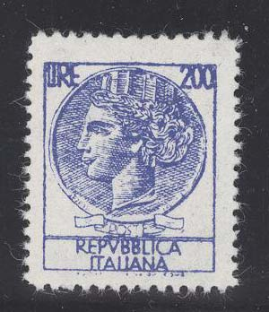
Rome forgeries
Book: "Siracusana La Variazione Infinita" (1995) issued by the Italian Post Office printed by Fotolito Polycrom Bologna; contains 192 pages description about these stamps, including debut, sheets, coils, postcards, technical details and forgeries.
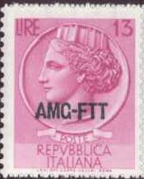
1 L black 5 L brown 10 L red 15 L lilac 20 L green 25 L brown 30 L violet 40 L red 50 L olive 65 L brown 70 L blue 85 L green 90 L lilac 100 L grey 115 L blue 150 L brown 200 L blue 500 L blue (larger size) 1000 L brown (larger size)
205 L lilac (with error in the map of Peru)
The 205 L stamp was withdrawn quickly and replaced by another stamp. Forgeries exist of these stamps:

Modern forgery of this misprint.
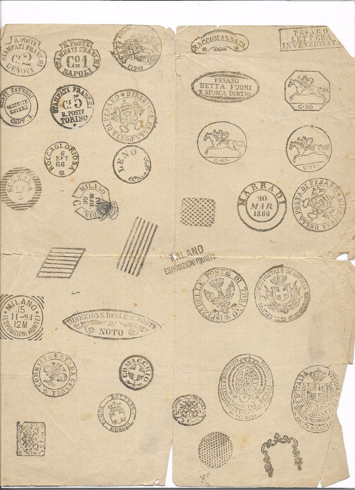

Here some forged cancels taken from a Fournier Album.
A bogus stamp with inscription "POSTALE CAPRERA ITALIA" should exist (I have never seen it, issued in 1860?). It is mentioned in Lewis and Pemberton (1863) "Forged Stamps". The text of this book is (page 12):
The following barefaced forgery is now being sold in London as a Caprera stamp. It is hardly necessary to say that there never have been stamps for that island. We borrow the description from Dr Gray:—" It was a water-colour drawing, somewhat like the Tuscan arms and crown ; but the frame was inscribed, "Postale Caprera Italia" (which means nothing, the literal translation is "Postal Caprera Italy"), 1 scudo, and dated 1.8.6.0 in the angles. The letters are painted on withwhite lead, instead of being left white by the printing, as they would b in a real stamp."
annullamenti, annullo = cancel
Antichi Stati = Italian States
autentico = genuine
dentellatura = perforation
estero = foreign
falsi = forged stamps
falsi d'epoca = postal forgery
foglio = sheet
francobolli = stamps
francobollo di stato = official stamp
giornali = newspaper
Lombardo Veneto = Austrian Italy
molto raro = very rare
Napoli = Naples
Non emessi = non issued
nuovo = unused
pachi postali = parcel stamp
Pontificio = Papal States, Roman States
Province Napoletane = Neapolitan Provinces
raro = rare
regno = referring to the period before 1945
ristampe = reprints
saggio = test, essay
Sardegna = Sardinia
Sassone = famous Italian stamp catalogue
segnatasse = postage due
senza gomma = no gum
Stato Pontificio = Papal (or Roman) States
Toscana = Tuscany
usato = used
valore = value
Signatures of Italian experts can be found on: http://digilander.libero.it/regnodisardegna/le%20sigle%20dei%20periti%20filatelici.html (in Italian).
Stamps - Francobolli - Timbres - Briefmarken - Postzegels
{kind=link}
{kind=link}
{kind=link}
{kind=link}
{kind=link}